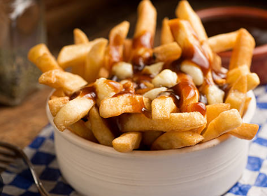
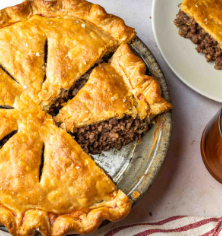
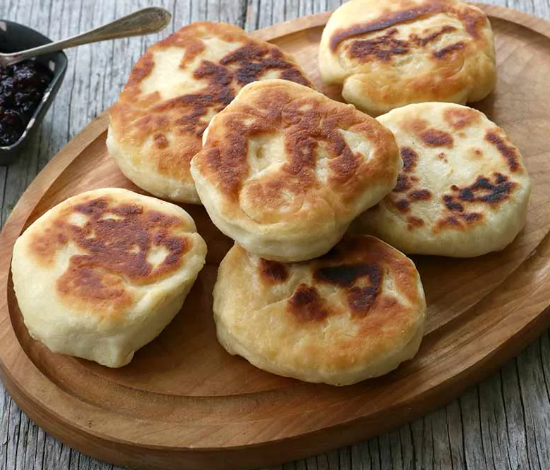
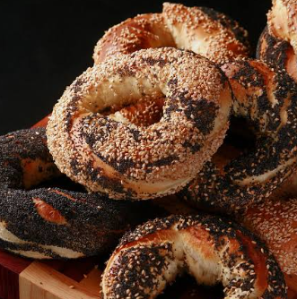
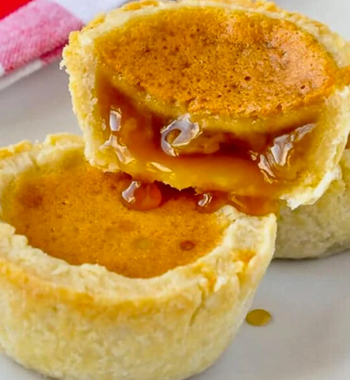
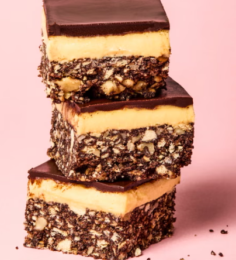
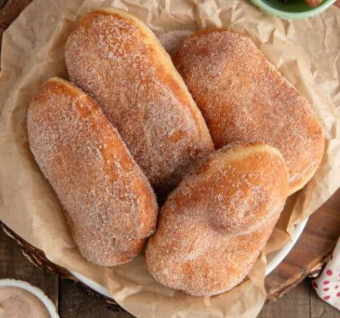
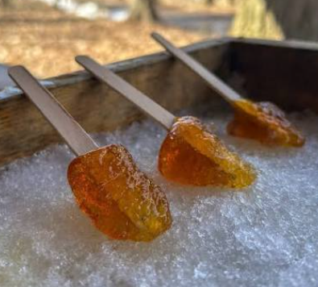

Poutine: A famous dish of french fries topped with cheese curds and hot brown gravy.

Tourtière: A savory French-Canadian meat pie spiced with cinnamon, cloves, and allspice, often eaten during the holidays.

Bannock: A simple, versatile flatbread with deep Indigenous roots.

Montreal Bagels: Dense, sweet bagels boiled in honey water and baked in a wood-fired oven

Butter Tarts: Pastry shells filled with a rich mixture of butter, sugar, and eggs.

Nanaimo Bars: A no-bake square with a crumb base, custard filling, and a chocolate topping.

BeaverTails: Stretched, fried dough pastries topped with sweet spreads like cinnamon sugar or chocolate.

Maple Taffy: Hot maple syrup poured onto clean snow and rolled onto a stick.